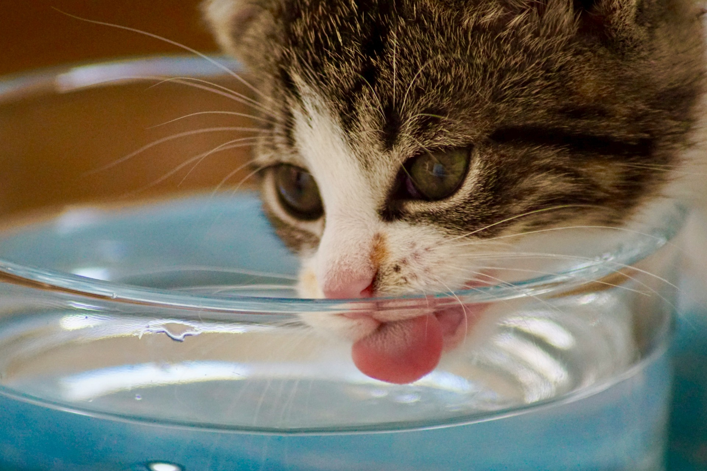

Alimentación
Escrito por: Luciana Proaño
Fecha: 28/2/2024
Todo sobre la una alimentación saludable para tu perrito o gatito
Introducción
Una dieta balanceada y saludable es indispensable para proteger a tu mascota. Sin embargo, con tantas opciones en el mercado, elegir cómo alimentar a tu amigo puede ser complicado. Es por ello que en esta guía práctica te proporcionaremos información general sobre los tipos de alimentos que pueden comer los perros y los gatos, qué comidas de humanos pueden consumir, y se explorará una dieta popular de los últimos años: la dieta BARF.
Los perros y gatos requieren de los siguientes nutrientes:
Agua: Actúa como solvente en los procesos químicos del cuerpo, y ayuda a la termorregulación de los animales.
Hidratos de carbono: Fuente de energía. Los perros y gatos los deben consumir en muy bajas cantidades.
Proteína: Fundamentales para la asimilación de los nutrientes, regulan la actividad muscular, forman hormonas, etc.
Lípidos: Suministran energía, participan en el transporte de nutrientes, protegen las fibras nerviosas, etc.
Vitaminas: Esenciales para el crecimiento, desarrollo y funcionamiento celular normal.
A pesar de esto, los animales de compañía son mayoritariamente carnívoros, así que su dieta está compuesta principalmente por proteínas.
Hay varios tipos de alimentos que pueden ser consumidos por perros y gatos. A continuación te mencionaremos los más importantes.
Comida Seca: Opción más práctica y común. Su eficacia depende de sus ingredientes y compuestos.
Comida húmeda: Facilita la digestión de perros y gatos. Se debe consumir con moderación.
Comida casera: Consiste en comida preparada por humanos en casa. A pesar de haber sido usada por cientos de años, los expertos recomiendan evitarla ya que la comida humana tiene ingredientes perjudiciales para las mascotas.
Comida natural (dieta BARF): Dieta que consiste en darles comida cruda, rica en proteínas.
Foto de Kabo en Unsplash
-Cebolla y ajo
-Chocolate y cafeína
- Masas crudas
- Uvas y pasas
- Leche y productos lácteos
-Aguacates, apios, cerezas
-Alcohol
Una cantidad adecuada de agua es esencial para perros y gatos. A pesar de que las cantidades difieran dependiendo de la condición médica, la edad y el tamaño, se recomienda siempre tener agua limpia y fresca para las mascotas.
Foto de Carolien van Oijen en Unsplash
Creada por el veterinario Billinghurst, esta dieta se basa en alimentar a los perros siguiendo su nutrición original como especie carnívora. El doctor argumentaba que si se proporcionaba alimentos similares a los que consumen los lobos, los perros tendrían un desarrollo mejor. Esta dieta propone alimentarlos con:
- Vísceras de pollo
- Verduras (como la zanahoria o arveja)
- Manzana
Foto de Jonathan Cooper en Unsplash
- Consulta con tu veterinario sobre la dieta de tu mascota a lo largo de su vida, ya que puede ir variando por distintos factores.
- Revisa las etiquetas de los productos, y que tengan un porcentaje adecuado de nutrientes.
- Controla las porciones según las necesidades de tu perro o gato. No dejes que se exceda para evitar sobrepeso.
Establece horarios de alimentación para mantener su sistema digestivo en buen funcionamiento.
La alimentación adecuada es clave para proteger la salud y felicidad de tu mascota. Conocer sobre los tipos de comida, los nutrientes necesarios y los alimentos a evitar te pueden ayudar a tomar la mejor decisión para el plan alimenticio de tu compañero. No olvides consultar con un veterinario cualquier inquietud.
Escuela de Postgrado de Veterinaria. (7 de febrero del 2022). Alimentación para perros: qué deben y no deben comer. Recuperado el 28 de febrero del 2024 de: https://postgradoveterinaria.com/mejor-alimentacion-perros-natural/
Risso, A. (marzo, 2016). Conceptos básicos de Nutrición en perros y gatos. Colegio de Veterinarios de la Provincia de Buenos Aires. Recuperado el 28 de febrero del 2024 de: https://ri.conicet.gov.ar/handle/11336/53482#:~:text=Los%20perros%20y%20gatos%20tienen,dieta%20la%20presencia%20de%20taurina.
Agradecimiento a las Doctoras Alegría Albán, Victoria Guapas, Carolina Joba de la clínica Care for Pets y a Rafaela Muñoz por su aporte para la creación de este blog.